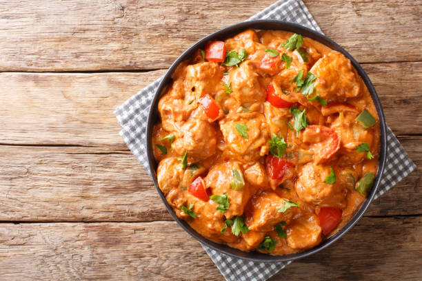

Chicken Mafé:
Peanut Butter Chicken

Discover the original recipe of Senegalese Chicken Mafé
Chicken Mafé is an essential recipe of African gastronomy and more particularly of Senegalese cuisine. It is prepared with a sauce made of peanut butter, tomatoes, onions and vegetables, all accompanied by tender and tasty pieces of chicken. Here is how to prepare the Senegalese Chicken Mafé, the real traditional recipe.
Necessary ingredients
To prepare the Senegalese Chicken Mafé for 4 people, you will need the following ingredients:
- 4 chicken legs
- 2 chopped onions
- 2 cloves of garlic, chopped
- 3 tablespoons of peanut oil
- 4 tablespoons of peanut butter
- 3 tomatoes, diced
- 2 carrots, diced
- 1 green bell pepper, diced
- 1 fresh chili pepper
- 2 bay leaves
- 1 tablespoon of tomato paste
- Salt and black pepper
- 500 ml of water

How to Make Chicken Mafé
Chicken Mafé may seem like a complex dish to prepare, but in reality, it is very easy to make. Here are a few tips to make your Chicken Mafé quick and easy.
- In a large saucepan, heat the peanut oil over medium heat.
- Add the chicken legs and brown them on all sides.
- Remove the chicken from the pan and set aside.
- Add onions and garlic to the pan and sauté until golden.
- Add the tomatoes, carrots, bell bell pepper and fresh chili to the pan and sauté for 5 minutes.
- Add the peanut butter, tomato paste, bay leaves, salt and black pepper to the pan and mix well.
- Add the chicken to the pan and pour in the water.
- Bring to a boil, then lower the heat and simmer for 30 minutes.
- Serve the Chicken Mafé hot with rice.